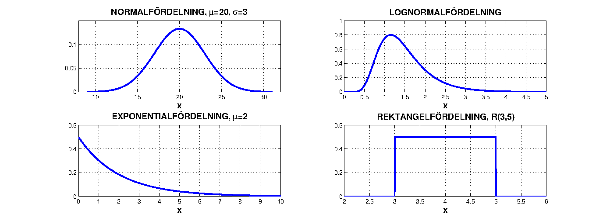

load("data/lab1_filer/jordprov.Rdata")
# skriv din R-kod härFördelningar, simulering och fördelningsanpassning
Datorlaboration 1
Abstrakt
Syftet med dagens laboration är att du ska - träna på begreppen täthetsfunktion och fördelningsfunktion - träna på att simulera slumptal från en fördelning - träna på att använda olika grafiska metoder för att undersöka vilka fördelningar ett datamaterial kan komma från
Datamaterial jordprov
I skogsområdet ASA försökspark i Småland är 94 olika gropar grävda i marken och från varje grop är jordprover tagna där bland mycket annat aluminiumhalt och calciumhalt är uppmätta (mg/g). Data finns i filen
data/lab1_filer/jordprov.Rdatasom innehåller de två variablernaalochca.Öppna filen i RStudio, exempelvis genom att klicka på den under Files. Du kan se de uppmätta halterna genom att klicka på ikonen längst till höger på raden
jordprov. Alternativt skriver duView(jordprov)i RStudios konsoll (fönster). För att nå variabelnali datamaterialetjordprovskriver dujordprov$al.
1 Överblick av datamaterialet
Först vill man beräkna några sammanfattande mått för data (medelvärde, min, max, standardavvikelse o.s.v.) och se några översiktsfigurer. Kommandot
mean(jordprov$al)ger dig medelvärdet av aluminiummätningarna.
# skriv din R-kod härSvar:
Svar:
Passar någon standardfördelning till mina data?
Nu vill vi, med grafiska metoder, undersöka om de två dataseten kan modelleras med några standardfördelningar. Några kontinuerliga standardfördelningar som vi stöter på i kursen är normalfördelningen, lognormalfördelningen, exponentialfördelningen och rektangelfördelningen (likformig fördelning eller på engelska uniform).

När du tittar på histogrammet för aluminiumhalter verkar det inte orimligt att de skulle vara normalfördelade, men ett histogram är oftast ett trubbigt instrument då man vill anpassa en standardfördelning till data. En mer använd metod är att rita ut data i ett så kallat fördelningspapper eller QQ-plot. För att illustrera metoden är vi hjälpta av att se hur den fungerar på stickprov där vi verkligen vet fördelningen, vi behöver alltså veta hur man skapar slumptal från olika fördelningar.
2 Simulering av slumpvariabler i R
I R finns det färdiga funktioner för simulering från respektive fördelning. Några exempel på dessa funktioner ser du i tabellen nedan.
| Fördelning | Funktion | Exempel |
|---|---|---|
| Normal | rnorm(antal,mean,stddev) |
rnorm(20,3,1) |
| Exponential | rexp(antal,1/mean) |
rexp(50,0.5) |
| Rektangel | runif(antal,min,max) |
runif(30,-2,5) |
| Binomial | rbinom(antal,n,p) |
rbinom(10,5,0.2) |
| Poisson | rpois(antal,mean) |
rpois(25,4) |
Vill du t.ex. simulera 100 slumptal från en normalfördelning med väntevärde (mean) 20 och standardavvikelse (stddev) 3 och lägga dem i variabeln norm1 gör du det genom norm1<-rnorm(100,20,3).
Svar:
QQ-plot
Ofta har man frågeställningen om data i ett stickprov kan tänkas modelleras med en teoretisk standardfördelning. Detta gällde t.ex. aluminiumhalterna i marken som du studerade tidigare. En grafisk metod när man försöker anpassa sina data till en fördelning är att använda sig av en så kallad QQ-plot där Q står för kvantil (quantile). Värdena i datamaterialet jämförs med de man kunde förvänta sig från en viss teoretisk fördelning. Om data överensstämmer med de förväntade kommer punkterna i en QQ-plot att ligga utmed en rät linje. Omvänt, om QQ-plotten visar stor avvikelse från en rät linje passar inte den fördelning vi testat med till våra data. För att pröva om ett stickprov kan tänkas komma från en normalfördelning är kommandot qqnorm(stickprovsnamn).
Svar:
Eftersom vi vet att norm1 innehåller normalfördelade slumptal bör anpassningen förstås vara god. Observera dock att man inte kan kräva en perfekt rät linje i plotten, vi har ju att göra med slumptal. En mindre avvikelse i linjens båda ändar är inte ovanligt.
Svar:
3 Modell för aluminiumhalten
Vi tittar på aluminiumhalterna i de 94 jordproverna igen.
Svar:
Tidigare har du använt R för att beräkna medelvärde (m) och standardavvikelse (s) för aluminiumhalterna. Dessa värden kan du använda som uppskattningar av väntevärdet \(\mu\) och standardavvikelsen \(\sigma\) i den anpassade fördelningen. Givet att du tyckter att en normalfördelning passar bra till data kan vi nu sätta upp en modell för våra observationer.
Modell: \(X=\) “aluminiumhalten i ett jordprov”; \(X\) är normalfördelad med väntevärde \(\mu\) och standardavvikelse \(\sigma\). Vi skattar dessa parametrar som \(\hat{\mu} = m\) (“medelvärdet för stickprovet”) och \(\hat{\sigma} = s\) (“standardavvikelse för stickprovet”).
Svar:
Svar:
4 Modell för calciumhalten
Svar:
En annan standardfördelning som är vanlig för biodata är lognormalfördelningen. Mätningar kan modelleras med en lognormalfördelning om de logaritmerade mätningarna passar bra till en normalfördelning. Det innebär att det inte behövs någon speciell QQ-plot för denna fördelning, man kan använda qqnorm(log(stickprovsnamn)).
Svar:
Nu ska du uppskatta sannolikheten att en calciummätning överstiger 30 mg/g. Först behöver du sätta upp en modell för calciummätvärden. Antag att calciumvärden följer en lognormalfördelning. Sen använder du modellen för att göra beräkningar.
Svar:
Svar: